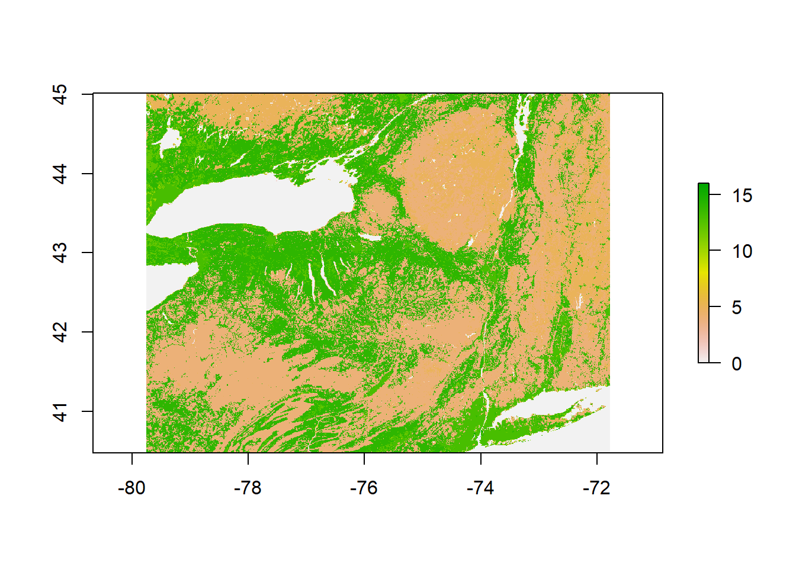
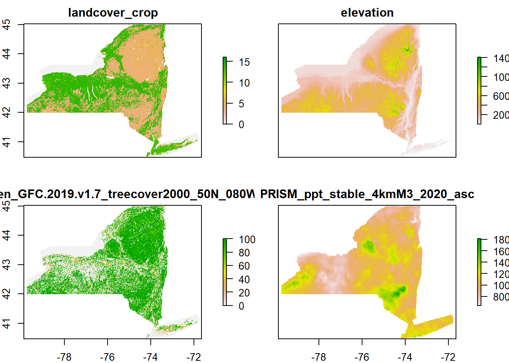
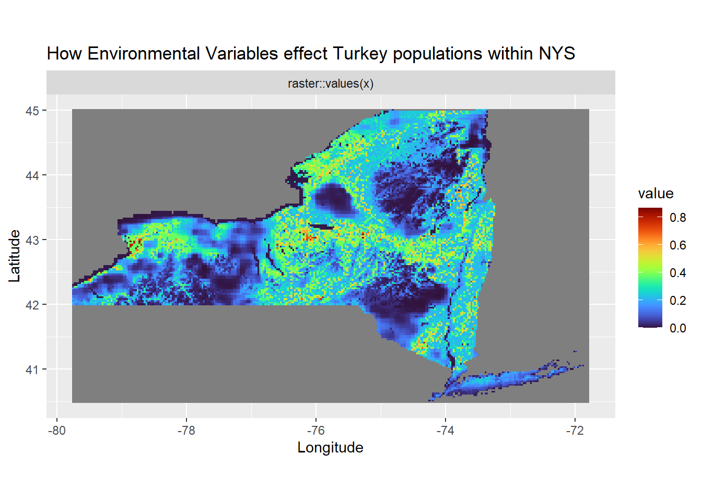

How landscape habitat influences Wild Eastern Turkey Populations within New York State
Marissa Zimmer
Introduction
New York State’s (NYS) wild turkey population constitutes a significant part of conservation concerns and support for the hunting community within NYS. In the early 1950s, the Department of Conservation (NYSDEC) helped restore and repopulate NYS wild turkey populations. The NYSDEC had also partnered with the National Wild Turkey Federation and SUNY Environmental Science and Forestry college in 2010 to research the impact of weather patterns and hunting zones on turkey populations. The results of this study have not been published at this time.
The aim of this project is to research, gather and compare data that involves understanding and explaining how land cover, tree canopy cover, elevation and precipitation can effect wild turkey population levels. Within NYS, many individuals have noticed seeing less wild turkeys than in years past and changing habitat factors in localized areas may be one factor effecting population levels. By looking at these environmental variables the aim of this project is to see if areas with less suitable environmental variables correlate to areas of lower population levels. If the results of this study come back to support this hypothesis then there is room for continued research into habitat suitability within NYS for wild turkey populations.
Materials and methods
For this project it was important to highlight the key environmental variables that effect wild turkey populations within New York State. Two of the environmental variables that were used, landcover and elevation were taken from the U.S. Geological Survey (USGS). Specifically, the data is a global digital elevation model (DEM) with a horizontal grid spacing of 30 arc seconds (approximately 1 kilometer) from several raster and vector sources of information. The USGS separated the data into tiles on a world map which can be selected by individual tile. The data for elevation was completed in 1996 and was developed over a three year period. For this project I was able to select a grid tile that included NY.
The next environmental variable that was chosen for this project was Tree canopy cover from the Global Land Analysis & Discovery. The global tree cover data is obtained from per pixel estimates of the 2010 percent maximum (peak growing season) tree canopy cover which comes from cloud-free annual growing season composite Land set 7 ETM + data. A median was taken from the annual tree canopy cover values from the years 2009-2011. Like the Land cover and elevation data the tree cover canopy data was chosen from a grid style map with a spatial resolution of 1 arc-second per pixel, approximately 30 m per pixel.
The last environmental variable, precipitation was taken from the PRISM Climate Group from Oregon State University. I selected the temporal period of May, 2020. The month of May was chosen based on wild eastern Turkeys breeding and nesting times. During the month of May their breeding and nesting behaviors peak.
Step 1: Loading the required packages
library(raster)
library(sf)
library(tigris)
library(rasterVis)
library(rgdal)
library(dismo)
library(ggplot2)
library(viridis)
# cache the results for quick compiling
options(tigris_use_cache = TRUE)Step 2: The Data
ebird_data <-read.csv(file = "C:/Users/maris/OneDrive/Desktop/maxent_turkey3.csv")
#Landcover from Dr. Williams
land_cover = raster ("C:/USers/maris/OneDrive/Desktop/Environmental Factor for Turkey Project/landcover_crop.asc")
crs(land_cover)=4326
#Treecover from Global Forest Watch
tree_cover = raster("C:/USers/maris/OneDrive/Desktop/Environmental Factor for Turkey Project/Hansen_GFC-2019-v1.7_treecover2000_50N_080W.tif")
#Precipitation data from PRISM
precip_cover = raster("C:/USers/maris/OneDrive/Desktop/Environmental Factor for Turkey Project/PRISM_ppt_stable_4kmM3_2020_asc.asc")
crs(precip_cover)=4326
#Elevation data from Dr. Williams
elevation_cover = raster ("C:/Users/maris/OneDrive/Desktop/Environmental Factor for Turkey Project/elevation.tif")let’s take a quick look at all four environmental layers
land_cover## class : RasterLayer
## dimensions : 9119, 12478, 113786882 (nrow, ncol, ncell)
## resolution : 0.004166667, 0.004166667 (x, y)
## extent : -113, -61.00833, 20.00833, 58.00417 (xmin, xmax, ymin, ymax)
## crs : +proj=longlat +datum=WGS84 +no_defs
## source : landcover_crop.asc
## names : landcover_croptree_cover## class : RasterLayer
## dimensions : 40000, 40000, 1.6e+09 (nrow, ncol, ncell)
## resolution : 0.00025, 0.00025 (x, y)
## extent : -80, -70, 40, 50 (xmin, xmax, ymin, ymax)
## crs : +proj=longlat +datum=WGS84 +no_defs
## source : Hansen_GFC-2019-v1.7_treecover2000_50N_080W.tif
## names : Hansen_GFC.2019.v1.7_treecover2000_50N_080W
## values : 0, 255 (min, max)precip_cover## class : RasterLayer
## dimensions : 621, 1405, 872505 (nrow, ncol, ncell)
## resolution : 0.04166667, 0.04166667 (x, y)
## extent : -125.0208, -66.47917, 24.0625, 49.9375 (xmin, xmax, ymin, ymax)
## crs : +proj=longlat +datum=WGS84 +no_defs
## source : PRISM_ppt_stable_4kmM3_2020_asc.asc
## names : PRISM_ppt_stable_4kmM3_2020_ascelevation_cover## class : RasterLayer
## dimensions : 12000, 9600, 115200000 (nrow, ncol, ncell)
## resolution : 0.008333333, 0.008333333 (x, y)
## extent : -140, -60, -10, 90 (xmin, xmax, ymin, ymax)
## crs : +proj=longlat +datum=WGS84 +no_defs
## source : elevation.tif
## names : elevation
## values : -79, 6710 (min, max)Now we need to make all the layers talk to each other. I chose to have each layer contain the same properties as the land cover data.
ny_counties <-counties(state = "NY", cb = FALSE,
resolution = "500k", year = 2020) %>%
st_union() %>%
st_transform(crs=projection(land_cover))
#landcover
land_coverny= crop(land_cover, as(ny_counties, "Spatial"))
#treecover
tree_coverny = crop(tree_cover,
as(st_transform(ny_counties,st_crs(tree_cover)), "Spatial"))#%>%
tree_coverny2 = projectRaster(tree_coverny, to=land_coverny,method="ngb")
#elevation
elevation_coverny= crop(elevation_cover,
as(st_transform(ny_counties,st_crs(elevation_cover)), "Spatial"))#%>%
elevation_coverny2 = projectRaster(elevation_coverny,to=land_coverny, method = "ngb")
#precipitation
precip_coverny = crop(precip_cover,
as(st_transform(ny_counties,st_crs(precip_cover)), "Spatial"))#%>%
precip_coverny2 = projectRaster(precip_cover, to=land_coverny,method="ngb")
#extent time
extent_1 = extent(land_coverny)
precip_cover = crop(precip_cover, extent_1)
tree_coverny2 = crop(tree_coverny2, extent_1)
elevation_coverny2 = crop(elevation_coverny2, extent_1)Let’s relook at all of the environmental layers and make sure they match:
land_coverny## class : RasterLayer
## dimensions : 1090, 1916, 2088440 (nrow, ncol, ncell)
## resolution : 0.004166667, 0.004166667 (x, y)
## extent : -79.7625, -71.77917, 40.475, 45.01667 (xmin, xmax, ymin, ymax)
## crs : +proj=longlat +datum=WGS84 +no_defs
## source : memory
## names : landcover_crop
## values : 0, 16 (min, max)tree_coverny2## class : RasterLayer
## dimensions : 1090, 1916, 2088440 (nrow, ncol, ncell)
## resolution : 0.004166667, 0.004166667 (x, y)
## extent : -79.7625, -71.77917, 40.475, 45.01667 (xmin, xmax, ymin, ymax)
## crs : +proj=longlat +datum=WGS84 +no_defs
## source : memory
## names : Hansen_GFC.2019.v1.7_treecover2000_50N_080W
## values : 0, 100 (min, max)precip_coverny2## class : RasterLayer
## dimensions : 1090, 1916, 2088440 (nrow, ncol, ncell)
## resolution : 0.004166667, 0.004166667 (x, y)
## extent : -79.7625, -71.77917, 40.475, 45.01667 (xmin, xmax, ymin, ymax)
## crs : +proj=longlat +datum=WGS84 +no_defs
## source : memory
## names : PRISM_ppt_stable_4kmM3_2020_asc
## values : 643.24, 1809.52 (min, max)elevation_coverny2## class : RasterLayer
## dimensions : 1090, 1916, 2088440 (nrow, ncol, ncell)
## resolution : 0.004166667, 0.004166667 (x, y)
## extent : -79.7625, -71.77917, 40.475, 45.01667 (xmin, xmax, ymin, ymax)
## crs : +proj=longlat +datum=WGS84 +no_defs
## source : memory
## names : elevation
## values : 1, 1568 (min, max)Let’s now check and see how each layer plots, including the ebird data.
plot(ebird_data)
plot(land_coverny)
plot(tree_coverny2)
plot(precip_coverny2)
plot(elevation_coverny2)
Each layer (plot) is now able to stack onto each other, as shown below:
stack_1= stack(land_coverny,elevation_coverny2,tree_coverny2, precip_coverny2)%>%
mask(mask=as(ny_counties, "Spatial"))Step 3
all_data <-bioclim(stack_1, ebird_data)
stack_1= stack(land_coverny,elevation_coverny2,tree_coverny2, precip_coverny2)%>%
mask(mask=as(ny_counties, "Spatial"))
e <-extent(-79.7625, -71.77917, 40.475, 45.01667)
data_predict <-predict(all_data, stack_1, progess='text', ext=e)Results
The first plot shows how each environmental layer is now properly cropped within NYS
plot(stack_1)
The Second plot combines all environmental variables and occurnace data taken from ebird
plot(data_predict)
The third and final plot is a more defined version of the second plot.
gplot(data_predict) + geom_tile(aes(fill = value)) +
facet_wrap(~ variable) +
scale_fill_viridis(option="turbo") +
coord_equal()+ ylab("Latitude")+ xlab("Longitude")+ggtitle("How Environmental Variables effect Turkey populations within NYS")
The final map located above show how the four environmental variables that were chosen for this project effect wild turkey habitat suitability within NYS. It is clear from this map that there are distinct clustered areas of both low and high suitability. Many of the areas with higher suitability seem to be within the range of 0.4-0.6 with very little area within NYS with a suitability score of 0.8 and above. Looking at each individual environmental layer compared to the final map we can observe how areas of lower suitability correlate with areas of higher precipitation, elevation, and tree cover followed by the same areas having lower land cover results.
Conclusions
These four environmental layers were chosen as being the most influential environmental factors effecting wild turkey populations within NYS. Precipitation have been known to effect nest and poult survival during the breeding periods of wild turkeys. During the first two weeks of a poults life increased precipitation can be fatal for a poult. Tree cover is also an important factor when looking into habitat suitability as turkeys need to roost in a tree every night to stay away from nocturnal predators. Turkeys like to roost in pine trees during the Winter to help stay warm and, during the Spring time when their breeding season is in full swing, they prefer more open hardwoods to roost in. The third factor, land cover was important as turkeys need areas that combine many different land cover aspects within the same area. Turkeys need open areas to forage with an available food source, ideally open fields or crop fields. These open areas also double as areas where male gobblers can display their feathers during their breeding season to attract a hen. These open fields often are accompanied with nearby areas of secondary succession where the hens feel safe nesting on the ground. The fourth and final environmental layer that was chosen was elevation. Generally the elevation within NYS is the same for many parts with the exception of the Adirondack region and some other smaller areas within NYS. Turkeys prefer lower elevation as they need those different land cover aspects that were previously talked about. It is hard to find all those land cover aspects when you begin increasing elevation.
This project is just the beginning at looking into why NYS wild turkey populations have began to lower over the recent years. From this project, results we can determine that areas of lower suitability correlate with higher precipitation, elevation, and tree cover followed by the same areas having lower land cover. More non-environmental variables are needed as the next step into looking at how they effect population levels. Some variables may include; hunting pressure, human disturbance and urban sprawl as possible factors that are also contributing to declining population levels.
This project also provides evidence for future research and funding for habitat restoration for ground nesting birds. By focusing on areas with NYS with lower suitability and improving habitat restoration efforts not only will turkeys be able to reap the benefits but other ground nesting birds will like grouse and pheasant.
References
Chamberlain, M. J., Cohen, B. S., Bakner, N. W., & Collier, B. A. (2020). Behavior and Movement of Wild Turkey Broods. Journal of Wildlife Management, 84(6), 1139–1152. https://doi.org/10.1002/jwmg.21883
eBird. 2021. eBird: An online database of bird distribution and abundance [web application]. eBird, Cornell Lab of Ornithology, Ithaca, New York. Available: http://www.ebird.org. (Accessed: Date[October 30th, 2021]).
Gerrits, A. P., Wightman, P. H., Cantrell, J. R., Ruth, C., Chamberlain, M. J., & Collier, B. A. (2020). Movement Ecology of Spring Wild Turkey Hunters on Public Lands in South Carolina, USA. Wildlife Society Bulletin, 44(2), 260–270. https://doi.org/10.1002/wsb.1094
“Global Forest Change 2000–2020data Download.” Global Forest Change, https://storage.googleapis.com/earthenginepartners-hansen/GFC-2020-v1.8/download.html.
Madan, R. T., & Change, P. (2015). Predictors of Wild Turkey ( Meleagris gallopavo ) Population Change in California from 1972 to 2013 Riva T. Madan. 1–42. Retrieved from https://nature.berkeley.edu/classes/es196/projects/2015final/MadanR_2015.pdf
PRISM Climate Group, Oregon State U. (n.d.). Prism.oregonstate.edu. https://prism.oregonstate.edu/recent/monthly.php
State, N. Y., Sanford, R., Kurt, A., Jurczak, T., Kirsch, A., & Parker, K. (2005). Wild Turkey Management Plan. (July), 1–43. Retrieved from https://www.dec.ny.gov/docs/wildlife_pdf/turkeyplan.pdf
The Sixth National Wild Turkey Symposium. (n.d.). Retrieved from https://www.fs.fed.us/nrs/pubs/other/1990/ne_1990_healy_001.pdf#page=192
USGS (1997) USGS 30 ARC-second Global Elevation Data, GTOPO30. (ed. C.a.I.S.L. Research Data Archive at the National Center for Atmospheric Research).